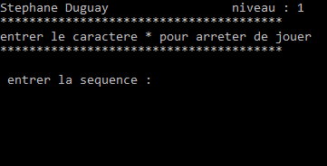
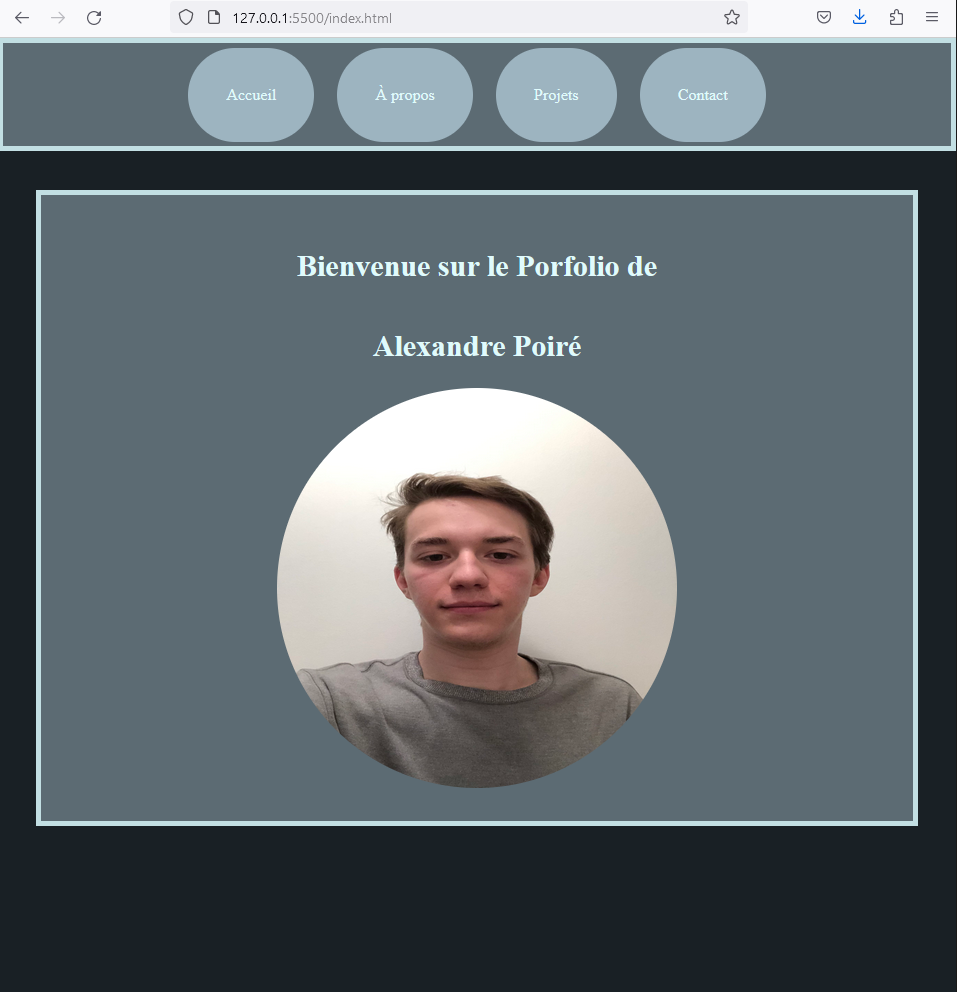

Voici certains de mes projets réalisé :
Jeu SimonSay
Ceci à été réaliser en tant que travaille pratique dans le cadre de mon cours d'algorithme. Il s'inspire du célèbre jeu SimonSay. L'ordinateur te donne une suite d'action a faire ou alors dans ce cas, une suite de chiffre et ton but est de refaire la même sans te tromper. À chaque fois que tu réussis, tu obtiens une suite plus longue.
Mon Portfolio
J'ai fait ce portfolio dans le cadre de mon cours d'informatique d'interaction personne-machine. J'avais choisi des couleurs asser clairs sur un fond sombre pour mieux voir les éléments.En ce moment, vous pouvez retrouver ce projet sur ma page github ainsi que le code utiliser pour le réaliser.